دکتر مسعود گوهری منش
دانشیار گروه مهندسی مکانیک — دانشگاه تربت حیدریه
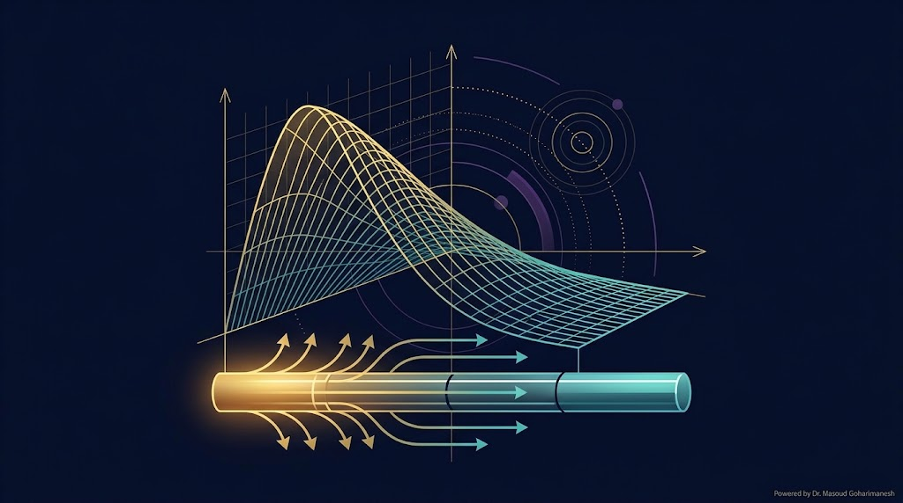
ریاضیات مهندسی پیشرفته — جلسه ۶
دکتر مسعود گوهری منش
دانشیار گروه مهندسی مکانیک — دانشگاه تربت حیدریه
میخواهیم **دقیقاً همان کاری را بکنیم که در پروژه پایانی** از شما خواسته شده: حل تحلیلی یک PDE، مقایسه با حل عددی، و آمادهسازی برای **PINN** بهمنظور تخمین پارامترها.

کتاب معروف فوریه که در سال ۱۸۲۲ منتشر شد و پایههای آنالیز فوریه و نظریه گرما را بنیان نهاد.
عنوان کامل: «نظریه تحلیلی گرما» — اثری که ریاضیات مهندسی مدرن را متحول کرد.
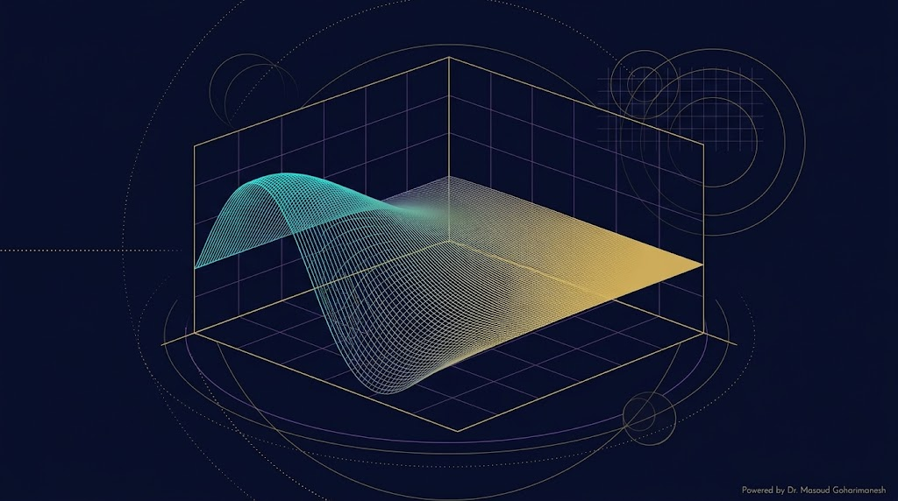
برای قطعهای از میله با طول $\Delta x$ و سطح مقطع $A$:
شار حرارتی متناسب با گرادیان دما:
علامت منفی: گرما از ناحیه گرم به سرد جاری میشود.
با $\Delta x \to 0$:
با تعریف $\alpha = \frac{k}{\rho c_p}$:
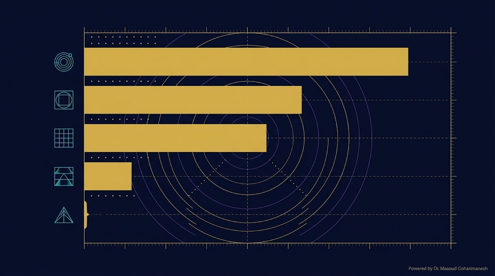
| ماده | α (cm²/s) |
|---|---|
| Silver (نقره) | ۱.۷۰ |
| Copper (مس) | ۱.۱۵ |
| Aluminum (آلومینیوم) | ۰.۸۵ |
| Iron (آهن) | ۰.۱۵ |
| Concrete (بتن) | ۰.۰۰۵ |
توجه: α نقش کلیدی در انتخاب مواد مکاترونیکی دارد (مثلاً در طراحی هیتسینک).
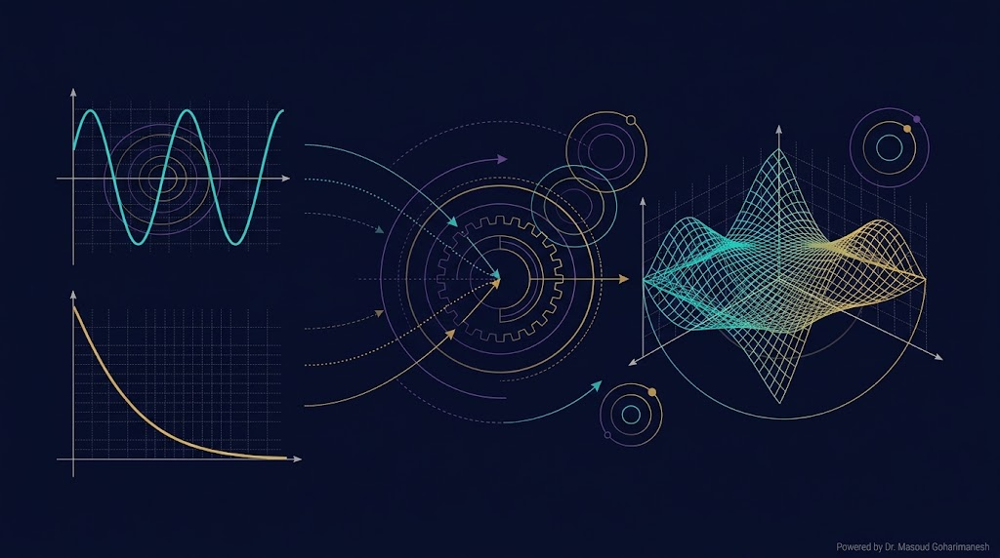
روش جداسازی متغیرها برای حل PDE های خطی و همگن با شرایط مرزی همگن کاربرد دارد. ایده اصلی:
چون PDE خطی و همگن است، جوابها را میتوان بهصورت حاصلضرب توابع تکمتغیره نوشت. این ایده، PDE را به دو ODE مستقل تبدیل میکند.
مشتقات جزئی:
با جایگذاری در $\frac{\partial u}{\partial t} = \alpha \frac{\partial^2 u}{\partial x^2}$:
تقسیم دو طرف بر $\alpha X(x) T(t)$:
از این تساوی، دو ODE مستقل به دست میآید:
مرتبه اول، خطی، با ضرایب ثابت
مرتبه دوم، خطی، همگن
اگر ثابت مثبت باشد، حل مکانی به شکل نمایی $\sinh, \cosh$ درمیآید که با شرایط مرزی همگن سازگار نیست. پس ثابت باید منفی باشد تا حل سینوسی داشته باشیم — این شرط، مقادیر ویژه (Eigenvalues) مسئله را تعیین میکند.
با شرایط مرزی دیریکله همگن:
حل عمومی برای $\lambda > 0$:
اعمال $X(0) = 0$: $A = 0$
اعمال $X(L) = 0$: $B \sin(\sqrt{\lambda} L) = 0$
برای جواب غیربدیهی ($B \neq 0$):
این توابع ویژه، مودهای مکانی مسئله را تشکیل میدهند.
حل (معادله جداپذیر یا خطی مرتبه اول):
هر حاصلضرب $X_n(x) T_n(t)$ جواب است، پس مجموع آنها هم جواب است:
از شرط اولیه $u(x, 0) = f(x)$:
این همان **سری فوریه سینوسی** است. پس:
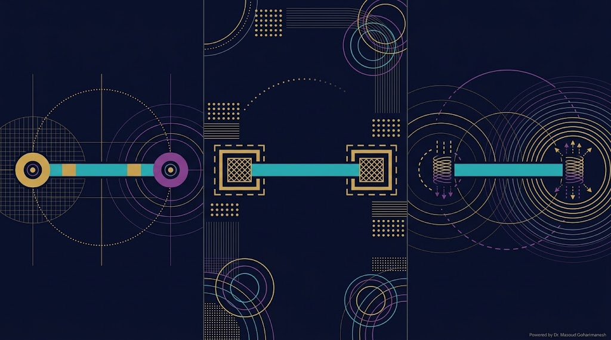
مقادیر ویژه: $\lambda_n = (n\pi/L)^2$ — توابع ویژه: $\sin(n\pi x/L)$
مقادیر ویژه: $\lambda_n = (n\pi/L)^2$ — توابع ویژه: $\cos(n\pi x/L)$ — یک مقدار ویژه صفر دارد (حالت پایا).
مقادیر ویژه از حل معادله فراموشی $\tan(\mu L) = \frac{2h\mu}{\mu^2 - h^2}$ به دست میآید.
توابع ویژه: $\sin((2n-1)\pi x/(2L))$ — کاربرد در انتقال حرارت نامتقارن.
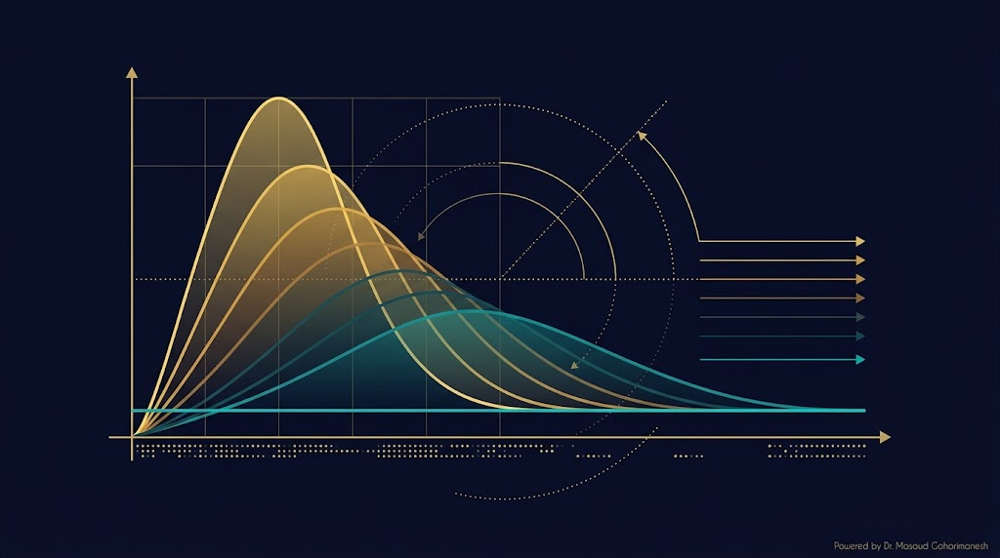
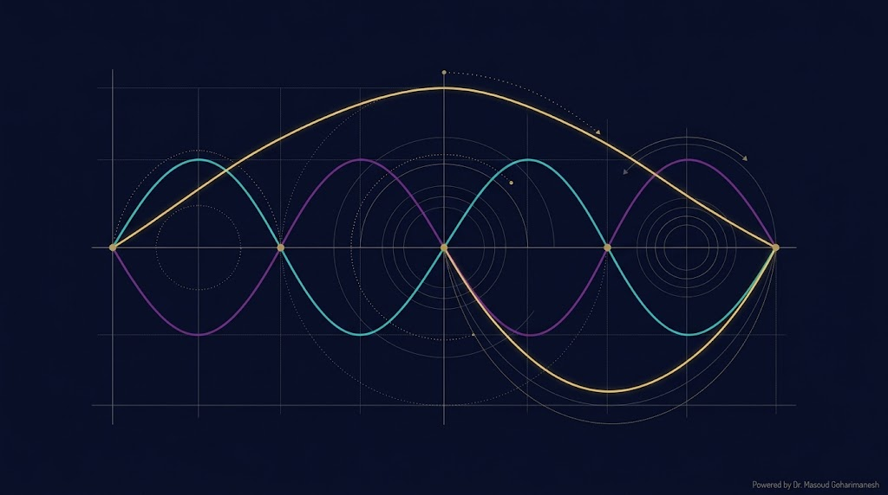
هر مود با نرخ $e^{-\alpha (n\pi/L)^2 t}$ میرا میشود. **مود اول (n=1) کندترین و مودهای بالاتر سریعتر** میرا میشوند.
به همین دلیل، برای زمانهای طولانی، فقط مود اول باقی میماند:
اگر فقط دادههای دیروقت داشته باشیم، میتوانیم از تخریب نمایی مود اول برای تخمین $\alpha$ استفاده کنیم — این دقیقاً همان کاری است که PINN انجام میدهد!
شرایط مرزی دیریکله: $u(0,t) = u(L,t) = 0$
شرط اولیه: $u(x, 0) = \sin\left(\frac{\pi x}{L}\right)$
با استفاده از فرمول عمومی:
از تعامد: $B_1 = 1$ و $B_n = 0$ برای $n > 1$
پس جواب دقیقاً یک مود است:
شرایط مرزی و ضریب نفوذ را تغییر دهید و دمای میله را در زمان ببینید.
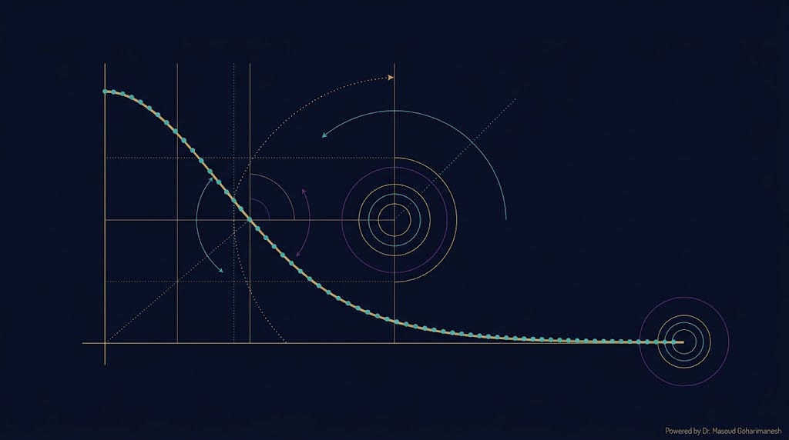
اگر این شرط نقض شود، حل عددی واگرا میشود. این محدودیت مهم در حل عددی PDE ها است.
% === حل عددی + تحلیلی معادله گرما === clear; clc; close all; L = 1; % طول میله alpha = 0.01; % ضریب نفوذ حرارتی T_final = 0.5; % زمان نهایی % === حل تحلیلی === x = linspace(0, L, 100); t = 0.1; u_analytical = sin(pi*x/L) .* exp(-alpha*(pi/L)^2*t); figure(1); plot(x, u_analytical, 'linewidth', 2); xlabel('x'); ylabel('u(x,t)'); title('حل تحلیلی معادله گرما'); % === حل عددی (FDM صریح) === Nx = 50; Nt = 1000; dx = L/(Nx-1); dt = T_final/Nt; r = alpha*dt/dx^2; fprintf('شرط پایداری: r = %.4f (باید ≤ 0.5)\n', r); xx = linspace(0, L, Nx); u = sin(pi*xx/L); for n = 1:Nt u_new = u; for i = 2:Nx-1 u_new(i) = u(i) + r*(u(i+1) - 2*u(i) + u(i-1)); end u = u_new; end figure(2); plot(xx, u, 'o-', 'linewidth', 1.5, 'markersize', 4); xlabel('x'); ylabel('u(x,T)'); title('حل عددی معادله گرما'); % === مقایسه === u_exact = sin(pi*xx/L) .* exp(-alpha*(pi/L)^2*T_final); error = max(abs(u - u_exact)); fprintf('خطای حداکثری: %.6e\n', error);
# === حل عددی + تحلیلی معادله گرما === import numpy as np import matplotlib.pyplot as plt from scipy.integrate import solve_ivp L = 1.0 alpha = 0.01 T_final = 0.5 # === حل تحلیلی === x = np.linspace(0, L, 100) t = 0.1 u_analytical = np.sin(np.pi*x/L) * np.exp(-alpha*(np.pi/L)**2*t) plt.figure(figsize=(10, 6)) plt.plot(x, u_analytical, 'b-', linewidth=2, label='تحلیلی') # === حل عددی (FDM صریح) === Nx = 50 Nt = 1000 dx = L/(Nx-1) dt = T_final/Nt r = alpha*dt/dx**2 print(f'شرط پایداری: r = {r:.4f} (باید ≤ 0.5)') xx = np.linspace(0, L, Nx) u = np.sin(np.pi*xx/L) for n in range(Nt): u[1:-1] = u[1:-1] + r*(u[2:] - 2*u[1:-1] + u[:-2]) plt.plot(xx, u, 'ro', markersize=4, label='عددی') # === مقایسه === u_exact = np.sin(np.pi*xx/L) * np.exp(-alpha*(np.pi/L)**2*T_final) error = np.max(np.abs(u - u_exact)) print(f'خطای حداکثری: {error:.6e}') plt.xlabel('x') plt.ylabel('u(x,t)') plt.legend() plt.grid(True, alpha=0.3) plt.savefig('heat_comparison.png', dpi=600, bbox_inches='tight') plt.show()
عنوان: Numerical Investigation of Fractional Third-Order Differential Equation
این مقاله، خطاهای عددی و نرخ همگرایی (Order of Convergence) را برای حل معادلات دیفرانسیل مرتبه کسری با روشهای تفاضل محدود گزارش میدهد.
| m × n | L∞ | EOC | L2 | EOC |
|---|---|---|---|---|
| 2 × 2 | 5.0865e-04 | — | 3.5971e-04 | — |
| 4 × 4 | 1.2448e-04 | 2.03 | 1.7893e-04 | 1.01 |
| 8 × 8 | 2.9576e-05 | 2.07 | 7.0153e-05 | 1.35 |
| 16 × 16 | 5.6195e-06 | 2.40 | 2.0321e-05 | 1.79 |
| 32 × 32 | 1.1095e-06 | 2.34 | 5.6823e-06 | 1.84 |
| 64 × 64 | 2.4840e-07 | 2.16 | 1.5560e-06 | 1.87 |
EOC = Experimental Order of Convergence. مقادیر حدود ۲ نشاندهنده همگرایی مرتبه ۲ است.
حل تحلیلی و عددی را برای چند مقدار مختلف α مقایسه میکنیم:
% === مطالعه پارامتری ضریب نفوذ حرارتی === clear; clc; close all; L = 1; T_final = 0.1; alphas = [0.005, 0.01, 0.05]; colors = {'b', 'r', 'g'}; x = linspace(0, L, 100); figure('Position', [100 100 1000 600]); for k = 1:length(alphas) alpha = alphas(k); % حل تحلیلی u_analytical = sin(pi*x/L) .* exp(-alpha*(pi/L)^2*T_final); % حل عددی Nx = 50; Nt = 2000; dx = L/(Nx-1); dt = T_final/Nt; r = alpha*dt/dx^2; if r > 0.5 fprintf('هشدار: r=%.2f > 0.5 برای alpha=%.4f\n', r, alpha); end xx = linspace(0, L, Nx); u = sin(pi*xx/L); for n = 1:Nt u_new = u; for i = 2:Nx-1 u_new(i) = u(i) + r*(u(i+1) - 2*u(i) + u(i-1)); end u = u_new; end subplot(1, 3, k); plot(x, u_analytical, 'linewidth', 2, 'color', colors{k}); hold on; plot(xx, u, 'o', 'markersize', 5, 'color', colors{k}); xlabel('x'); ylabel('u(x,T)'); title(sprintf('\\alpha = %.3f', alpha)); legend('تحلیلی', 'عددی'); grid on; end
PINN (Physics-Informed Neural Network — شبکه عصبی فیزیکآگاه) روشی است که در آن، قوانین فیزیکی (مثل PDE) مستقیماً در تابع هزینه شبکه عصبی تلفیق میشوند.
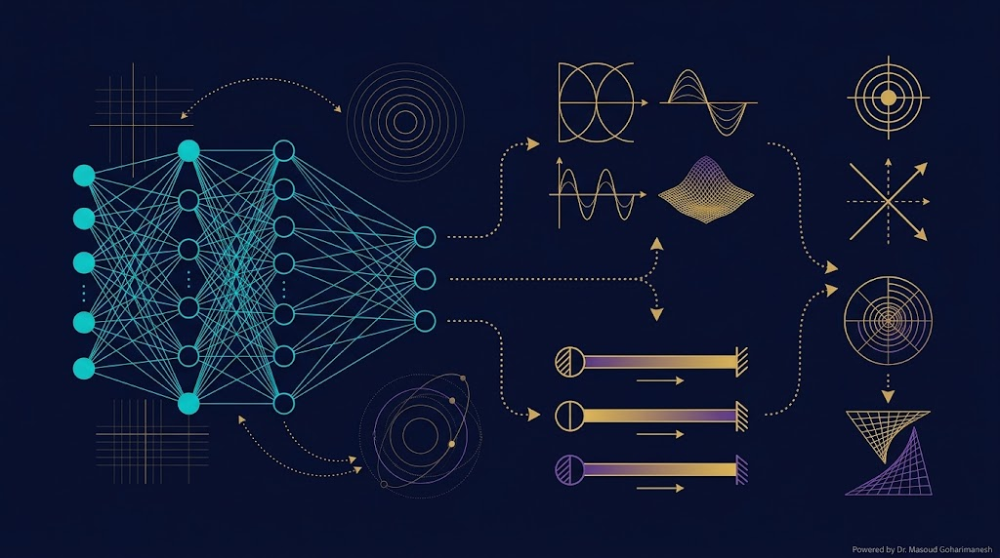
شبکه عصبی $u_\theta(x,t)$ را طوری آموزش میدهیم که:
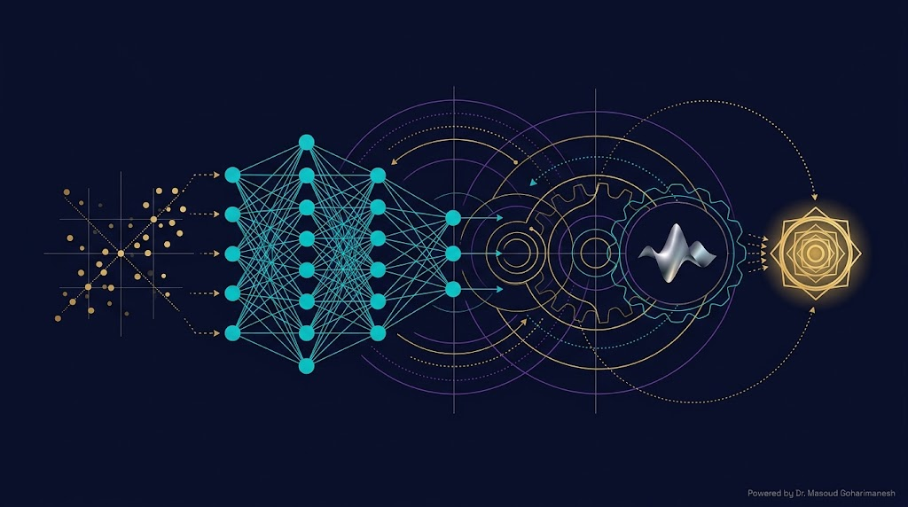
α معلوم است، میخواهیم $u(x,t)$ را حل کنیم — همان کاری که در این جلسه کردیم.
α نامعلوم است، دادههای $u(x,t)$ داریم، میخواهیم α را تخمین بزنیم.
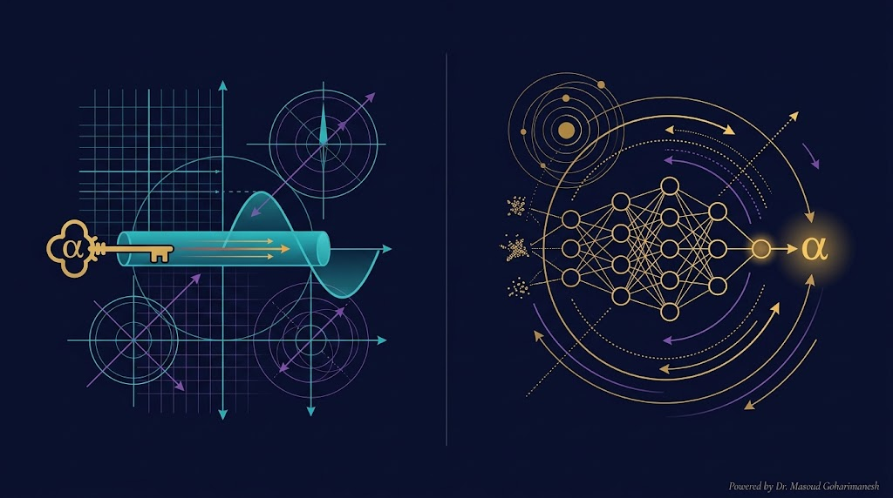
معادله گرما از بقای انرژی
7 گام گامبهگام
دیریکله، نویمان، رابین
FDM + همگرایی مرتبه ۲
تخمین ضریب α
اتصال مستقیم
جلسه ۷ — معادله موج و حل دالامبر
برای هر فصل از کتاب فوریه، یک پادکست صوتی آماده کردهام. میتوانید از این لینکها استفاده کنید: